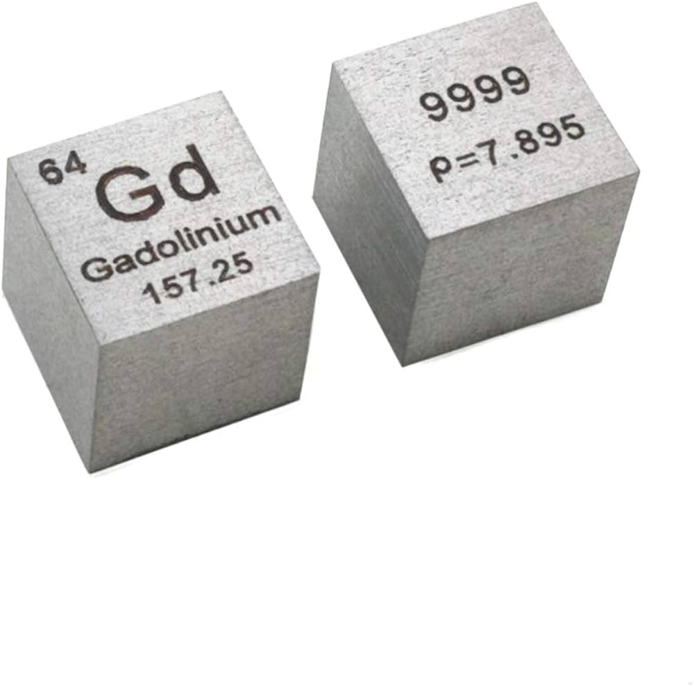

| Proprietà |
Valore |
| Nome Elemento |
Gadolinio |
| Numero Atomico |
64 |
| Massa Atomica |
157,25 u |
| Numero di Isotopi |
7 isotopi stabili |
| Temperatura di Fusione |
1312 °C |
| Temperatura di Ebollizione |
3273 °C |
| Densità |
7,90 g/cm³ |
| Elettronegatività |
1,2 |
| Anno di Scoperta |
1880 |
| Abbondanza |
Presente in quantità moderate nella crosta terrestre. |
| Applicazioni Tecnologiche |
- Altoparlanti e microfoni (magneti potenti).
- Schermi di smartphone e TV (migliora colori e luminosità).
- Sensori magnetici miniaturizzati per telefoni e dispositivi medici.
- Medicina: usato nei mezzi di contrasto per risonanza magnetica (RM).
|
| Dove si trova nei cellulari? |
- Presente nei magneti dei motori di vibrazione.
- Utilizzato nei microfoni e nei componenti audio.
- Possibile impiego in circuiti per migliorarne l'efficienza.
|
| Localizzazione Giacimenti |
Estratto da minerali come monazite e bastnasite, con produzione principale in Cina, USA, India e Brasile. |
| Effetti sull'Ambiente |
- Può contaminare suolo e acqua se non smaltito correttamente.
- Tossico per piante e animali ad alte concentrazioni.
- Il riciclo dei dispositivi che lo contengono è difficile ma fondamentale.
|
| Effetti sulla Salute |
Il gadolinio elementare è poco pericoloso, ma alcuni suoi composti possono essere tossici se inalati o ingeriti in grandi quantità. |
